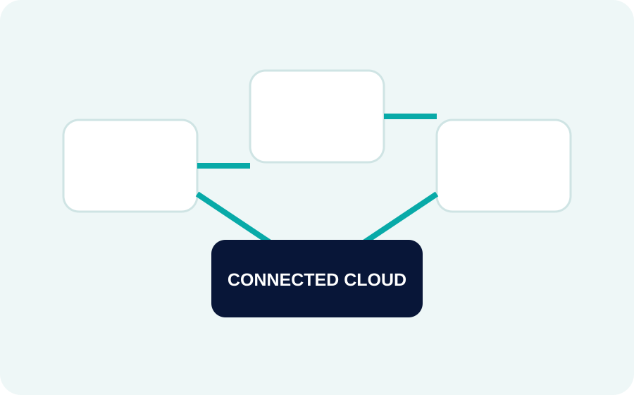

We combine product, engineering and integration capabilities around recurring business problems—then tailor the system to your operating reality.
Move critical processes from disconnected tools into a coherent digital operating model.
Typical systems: workflow platforms, portals, dashboards, approvals, integrations.
Reduce repetitive coordination by connecting triggers, rules, data and notifications.
Typical systems: approval engines, scheduled jobs, document workflows, alerts.
Give customers a clear place to request, track, manage and understand their relationship with your business.
Typical systems: account areas, service requests, documents, payments, status tracking.
Give teams one source of truth for operations, people, inventory, cases or projects.
Typical systems: admin consoles, role-based workspaces, reporting and audit trails.
Build a product foundation that can support onboarding, permissions, subscriptions and continuous iteration.
Typical systems: multi-tenant apps, billing, usage analytics and product admin.
Make operational data useful by defining the metrics and views people need to make decisions.
Typical systems: dashboards, reporting layers, alerts and KPI workspaces.
The strongest digital systems are not isolated screens. They connect user experience to business rules, integrations, data and operational ownership.
Map a Solution With Us